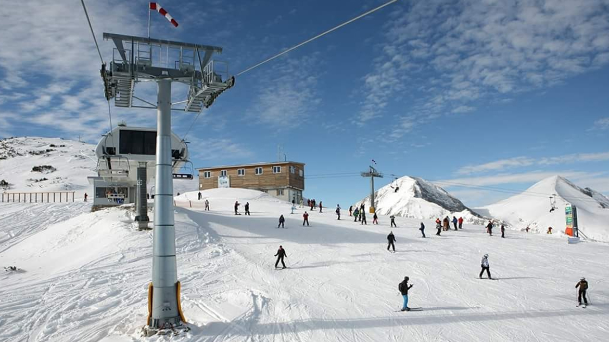

KASHMIR

Pahalgam
Weather : 10 - 21°C
Time Required : 1 - 2 days
Entry Fee : None
Pahalgam, KASHMIR Overview
Pahalgam, located in the Indian state of Jammu and Kashmir, is a picturesque and serene hill station renowned for its breathtaking natural beauty. Nestled in the Himalayas, this charming town offers lush green meadows, snow-capped peaks, and the soothing Lidder River. Pahalgam is a haven for nature lovers, trekkers, and those seeking tranquility. Visitors can enjoy outdoor activities like trekking, horse riding, and golfing, or simply unwind in the midst of pristine landscapes. It's also a starting point for the Amarnath Yatra pilgrimage. With its stunning vistas and a range of recreational options, Pahalgam is a delightful destination for all seasons.

Gulmarg
Weather : 6 - 17°C
Timings : Open Everyday(10:00 AM to 5:00 PM)
Time Duration : 1 -2 days
Entry Fee : No Entry Fee
Gulmarg, KASHMIR Overview
Situated at an altitude of 2730 m above sea level, Gulmarg is a popular skiing destination located in Pir Panjal Range of Union territory of Jammu and Kashmir. Surrounded by snow-covered lofty Himalayas, meadows of flowers, deep ravines, evergreen forested valleys, Gulmarg also has the world's second-highest Gondola ride.
Gulmarg is one of the top honeymoon destinations in India. Gulmarg has also been developed as an adventure hub as the Indian Institute of Skiing, and Mountaineering is located here. A lot of courses on trekking, mountaineering, skiing, and snowboarding are offered by IISM. There are a lot of other private tour operators in Gulmarg as well, which provide similar courses and facilities for skiing and snowboarding. Known for its scenic beauty, Gulmarg has also been a popular destination for shooting various Bollywood films

Sonamarg
Weather : 6 - 16°C
Timings : daytime
Time Duration : 1 -2 days
Entry Fee : None
Sonamarg, KASHMIR Overview
Sonamarg is a picturesque hill station in Jammu and Kashmir, located 80km north-east of Srinagar. At an elevation of around 2,730 metres above sea level, Sonamarg is known for its snow-laden fields, surrounded by majestic glaciers and serene lakes which casts subtle spells on the travellers.
The hill is enveloped by the great Himalayan glaciers - Kolhoi Glacier and Machoi Glacier - and gives rise to the famous Three Sisters of Kashmir Valley. Towering over this charming hill town are the peaks like Kolhoi Peak, Amarnath Peak, Machoi Peak and Sirbal Peak which makes Songamarg a popular place for adventure sports tourism.
Sonamarg acts as the base camp for the trekking routes which leads to the mountain lakes such as Gangabal, Vishansar, Gadsar, Satsar and Kishansar. The Valley is divided into two halves by the Thajiwas range - on one side is the fir-covered Thajiwas spur popular for its camping site. The other side houses some stunning waterfalls and the Thajiwas glacier which is the prime attraction of this place.
Sonamarg remains inaccessible during winters as the NH1D connecting it to the nearby places closed down due to heavy snowfall and avalanches.

Kishtwar National Park
Weather : 10 - 29°C
Timings : Day time
Time Required : 1 -2 days
Entry Fee : No entry fee
Kishtwar National Park, KASHMIR Overview
Kishtwar is on a plateau above chenab river and below the nagin sheer glacier, the area has saffron growth in a limited time and its harvesting is accompanied by ceremonies and festivals, this is typically during summer. Spread over an area of 400 sq.km the park contains 15 mammal species including the musk deer and Himalayan black and brown bear. Even though Kishtwar is not the only high altitude wildlife sanctuary, it is made special because of its large variety of flora and fauna.